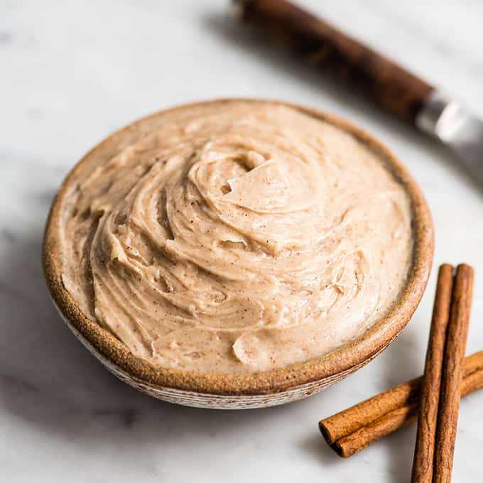

Texas Roadhouse Butter Recipe

Description
This Copycat Texas Roadhouse Butter recipe needs nothing more than a little honey,
butter, and 2 additional ingredients! Use this on homemade rolls, pancakes, sweet potatoes, and more!
Ingredients
- 1 stick salted butter, at room temperature
- 1/4 cup powdered sugar
- 1.5 Tablespoons honey
- 3/4 teaspoon cinnamon
Instructions
- For a creamy consistency, ensure that your butter is very soft and has been at room temperature for at
least an hour. Don't heat it in the microwave to achieve this as it will mess with the consistency of the butter.
- Mix all ingredients with an electric mixer until it's creamy and smooth. Refrigerate until ready to use and enjoy!